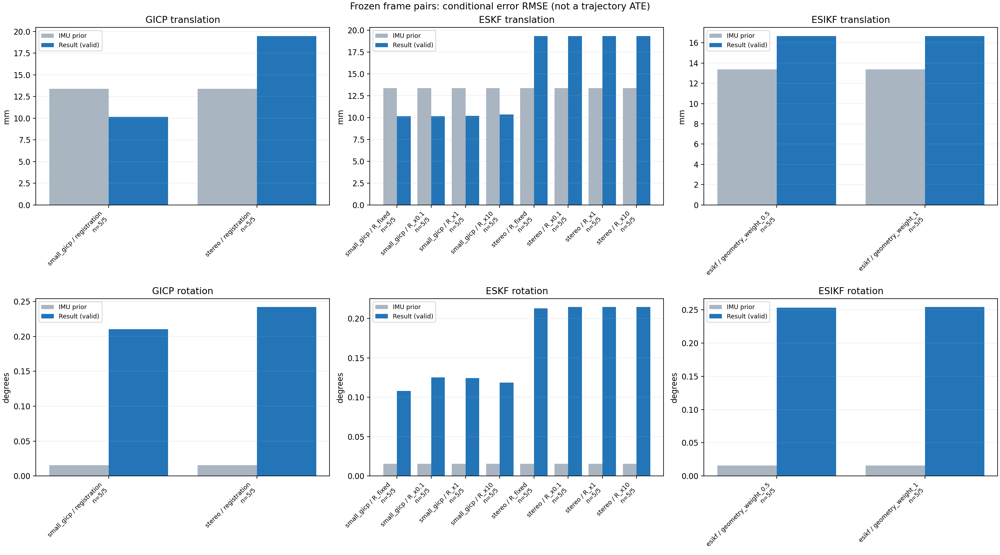

20261015_112757_right · depth=sgbm · cache=6b4a4fb5acbe9b9463b3
固定图像对与纯 IMU 先验；ESKF 回放固定 GICP 观测，ESIKF 直接读取点云。真值只用于此报告。
SGBM 调试基线：结果用于检查接口、坐标与融合行为，模型视差替换后需重新评估 GICP 精度和协方差。
误差按每对图像的锚点计算，单位 m / degrees。此处 RMSE 不是全序列 ATE；末帧受同一锚点条件约束。NIS 与条件马氏距离是诊断量，少量相关图像对不能用于宣称协方差已校准。
全部指标 CSV · R / P / K 矩阵 CSV · ESIKF 逐轮 CSV · 配置快照 · 矢量图
| stage | method | variant | valid | total | translation RMSE (m) | rotation RMSE (deg) |
|---|---|---|---|---|---|---|
| esikf | esikf | geometry_weight_0.5 | 5 | 5 | 0.016667 | 0.25346 |
| esikf | esikf | geometry_weight_1 | 5 | 5 | 0.016678 | 0.25408 |
| eskf | small_gicp | R_fixed | 5 | 5 | 0.010145 | 0.10826 |
| eskf | small_gicp | R_x0.1 | 5 | 5 | 0.010157 | 0.12535 |
| eskf | small_gicp | R_x1 | 5 | 5 | 0.01018 | 0.12437 |
| eskf | small_gicp | R_x10 | 5 | 5 | 0.010349 | 0.11853 |
| eskf | stereo | R_fixed | 5 | 5 | 0.019335 | 0.21286 |
| eskf | stereo | R_x0.1 | 5 | 5 | 0.019349 | 0.21454 |
| eskf | stereo | R_x1 | 5 | 5 | 0.019349 | 0.21454 |
| eskf | stereo | R_x10 | 5 | 5 | 0.019349 | 0.21454 |
| gicp | small_gicp | registration | 5 | 5 | 0.010153 | 0.21032 |
| gicp | stereo | registration | 5 | 5 | 0.019484 | 0.24197 |

| stage | case | method | variant | status | inliers | converged | prior_trans_error_m | result_trans_error_m | prior_rot_error_deg | result_rot_error_deg | R_rot_trace_rad2 | R_pos_trace_m2 | nis_regularized |
|---|---|---|---|---|---|---|---|---|---|---|---|---|---|
| gicp | static_start | stereo | registration | eligible | 15783 | 1 | 8.5313e-05 | 0.003147 | 0.00090396 | 0.033156 | 6.439e-09 | 9.8851e-08 | nan |
| gicp | static_start | small_gicp | registration | eligible | 17041 | 1 | 8.5313e-05 | 0.009057 | 0.00090396 | 0.04068 | 6.3507e-06 | 9.0346e-05 | nan |
| gicp | sync_motion | stereo | registration | eligible | 16102 | 0 | 0.00089766 | 0.010428 | 0.0098191 | 0.15211 | 6.5293e-09 | 1.011e-07 | nan |
| gicp | sync_motion | small_gicp | registration | eligible | 17059 | 1 | 0.00089766 | 0.012747 | 0.0098191 | 0.24954 | 7.1108e-06 | 9.7419e-05 | nan |
| gicp | main_motion | stereo | registration | eligible | 17242 | 0 | 0.0040306 | 0.015619 | 0.019163 | 0.10798 | 6.6523e-09 | 1.0331e-07 | nan |
| gicp | main_motion | small_gicp | registration | eligible | 18056 | 1 | 0.0040306 | 0.011254 | 0.019163 | 0.18101 | 7.085e-06 | 9.209e-05 | nan |
| gicp | main_motion_long | stereo | registration | eligible | 17178 | 0 | 0.02491 | 0.033775 | 0.02698 | 0.48215 | 7.5647e-09 | 1.1744e-07 | nan |
| gicp | main_motion_long | small_gicp | registration | eligible | 17546 | 1 | 0.02491 | 0.011604 | 0.02698 | 0.34653 | 7.6432e-06 | 0.00010016 | nan |
| gicp | static_end | stereo | registration | eligible | 21549 | 0 | 0.0161 | 0.019868 | 0.0045092 | 0.1561 | 5.3407e-09 | 8.942e-08 | nan |
| gicp | static_end | small_gicp | registration | eligible | 22788 | 1 | 0.0161 | 0.0030925 | 0.0045092 | 0.066322 | 5.0345e-06 | 6.7498e-05 | nan |
| eskf | static_start | stereo | R_x0.1 | updated | 15783 | 1 | 8.5313e-05 | 0.0031468 | 0.00090396 | 0.033149 | 6.439e-10 | 9.8851e-09 | 0.00077025 |
| eskf | static_start | stereo | R_x1 | updated | 15783 | 1 | 8.5313e-05 | 0.0031467 | 0.00090396 | 0.033149 | 6.439e-09 | 9.8851e-08 | 0.00077024 |
| eskf | static_start | stereo | R_x10 | updated | 15783 | 1 | 8.5313e-05 | 0.0031467 | 0.00090396 | 0.033148 | 6.439e-08 | 9.8851e-07 | 0.00077022 |
| eskf | static_start | stereo | R_fixed | updated | 15783 | 1 | 8.5313e-05 | 0.0030613 | 0.00090396 | 0.032673 | 0.00022846 | 0.0012 | 0.00074914 |
| eskf | static_start | small_gicp | R_x0.1 | updated | 17041 | 1 | 8.5313e-05 | 0.0090533 | 0.00090396 | 0.040624 | 6.3507e-07 | 9.0346e-06 | 0.0061558 |
| eskf | static_start | small_gicp | R_x1 | updated | 17041 | 1 | 8.5313e-05 | 0.0090264 | 0.00090396 | 0.040302 | 6.3507e-06 | 9.0346e-05 | 0.0061368 |
| eskf | static_start | small_gicp | R_x10 | updated | 17041 | 1 | 8.5313e-05 | 0.0087669 | 0.00090396 | 0.037211 | 6.3507e-05 | 0.00090346 | 0.0059534 |
| eskf | static_start | small_gicp | R_fixed | updated | 17041 | 1 | 8.5313e-05 | 0.0088016 | 0.00090396 | 0.039335 | 0.00022846 | 0.0012 | 0.0059533 |
| eskf | sync_motion | stereo | R_x0.1 | updated | 16102 | 0 | 0.00089766 | 0.010426 | 0.0098191 | 0.1456 | 6.5293e-10 | 1.011e-08 | 0.027784 |
| eskf | sync_motion | stereo | R_x1 | updated | 16102 | 0 | 0.00089766 | 0.010426 | 0.0098191 | 0.14559 | 6.5293e-09 | 1.011e-07 | 0.027783 |
| eskf | sync_motion | stereo | R_x10 | updated | 16102 | 0 | 0.00089766 | 0.010426 | 0.0098191 | 0.14557 | 6.5293e-08 | 1.011e-06 | 0.027775 |
| eskf | sync_motion | stereo | R_fixed | updated | 16102 | 0 | 0.00089766 | 0.010392 | 0.0098191 | 0.13607 | 0.00022846 | 0.0012 | 0.012968 |
| eskf | sync_motion | small_gicp | R_x0.1 | updated | 17059 | 1 | 0.00089766 | 0.01277 | 0.0098191 | 0.22004 | 7.1108e-07 | 9.7419e-06 | 0.17258 |
| eskf | sync_motion | small_gicp | R_x1 | updated | 17059 | 1 | 0.00089766 | 0.012879 | 0.0098191 | 0.21735 | 7.1108e-06 | 9.7419e-05 | 0.16749 |
| eskf | sync_motion | small_gicp | R_x10 | updated | 17059 | 1 | 0.00089766 | 0.013689 | 0.0098191 | 0.20159 | 7.1108e-05 | 0.00097419 | 0.1295 |
| eskf | sync_motion | small_gicp | R_fixed | updated | 17059 | 1 | 0.00089766 | 0.0129 | 0.0098191 | 0.16982 | 0.00022846 | 0.0012 | 0.078056 |
| eskf | main_motion | stereo | R_x0.1 | updated | 17242 | 0 | 0.0040306 | 0.015599 | 0.019163 | 0.097273 | 6.6523e-10 | 1.0331e-08 | 0.00045219 |
| eskf | main_motion | stereo | R_x1 | updated | 17242 | 0 | 0.0040306 | 0.015599 | 0.019163 | 0.097273 | 6.6523e-09 | 1.0331e-07 | 0.00045219 |
| eskf | main_motion | stereo | R_x10 | updated | 17242 | 0 | 0.0040306 | 0.015599 | 0.019163 | 0.097273 | 6.6523e-08 | 1.0331e-06 | 0.00045219 |
| eskf | main_motion | stereo | R_fixed | updated | 17242 | 0 | 0.0040306 | 0.015594 | 0.019163 | 0.096894 | 0.00022846 | 0.0012 | 0.00044957 |
| eskf | main_motion | small_gicp | R_x0.1 | updated | 18056 | 1 | 0.0040306 | 0.011238 | 0.019163 | 0.15268 | 7.085e-07 | 9.209e-06 | 0.00096259 |
| eskf | main_motion | small_gicp | R_x1 | updated | 18056 | 1 | 0.0040306 | 0.011238 | 0.019163 | 0.15269 | 7.085e-06 | 9.209e-05 | 0.00096226 |
| eskf | main_motion | small_gicp | R_x10 | updated | 18056 | 1 | 0.0040306 | 0.011238 | 0.019163 | 0.15277 | 7.085e-05 | 0.0009209 | 0.00095901 |
| eskf | main_motion | small_gicp | R_fixed | updated | 18056 | 1 | 0.0040306 | 0.011235 | 0.019163 | 0.15207 | 0.00022846 | 0.0012 | 0.00094607 |
| eskf | main_motion_long | stereo | R_x0.1 | updated | 17178 | 0 | 0.02491 | 0.033673 | 0.02698 | 0.44504 | 7.5647e-10 | 1.1744e-08 | 0.0049139 |
| eskf | main_motion_long | stereo | R_x1 | updated | 17178 | 0 | 0.02491 | 0.033673 | 0.02698 | 0.44504 | 7.5647e-09 | 1.1744e-07 | 0.0049139 |
| eskf | main_motion_long | stereo | R_x10 | updated | 17178 | 0 | 0.02491 | 0.033673 | 0.02698 | 0.44504 | 7.5647e-08 | 1.1744e-06 | 0.0049138 |
| eskf | main_motion_long | stereo | R_fixed | updated | 17178 | 0 | 0.02491 | 0.033653 | 0.02698 | 0.44414 | 0.00022846 | 0.0012 | 0.004881 |
| eskf | main_motion_long | small_gicp | R_x0.1 | updated | 17546 | 1 | 0.02491 | 0.011617 | 0.02698 | 0.071754 | 7.6432e-07 | 1.0016e-05 | 0.016472 |
| eskf | main_motion_long | small_gicp | R_x1 | updated | 17546 | 1 | 0.02491 | 0.011619 | 0.02698 | 0.071557 | 7.6432e-06 | 0.00010016 | 0.016458 |
| eskf | main_motion_long | small_gicp | R_x10 | updated | 17546 | 1 | 0.02491 | 0.011639 | 0.02698 | 0.069625 | 7.6432e-05 | 0.0010016 | 0.016319 |
| eskf | main_motion_long | small_gicp | R_fixed | updated | 17546 | 1 | 0.02491 | 0.011619 | 0.02698 | 0.071087 | 0.00022846 | 0.0012 | 0.015978 |
| eskf | static_end | stereo | R_x0.1 | updated | 21549 | 0 | 0.0161 | 0.019394 | 0.0045092 | 0.018077 | 5.3407e-10 | 8.942e-09 | 0.00010412 |
| eskf | static_end | stereo | R_x1 | updated | 21549 | 0 | 0.0161 | 0.019394 | 0.0045092 | 0.018077 | 5.3407e-09 | 8.942e-08 | 0.00010412 |
| eskf | static_end | stereo | R_x10 | updated | 21549 | 0 | 0.0161 | 0.019394 | 0.0045092 | 0.018077 | 5.3407e-08 | 8.942e-07 | 0.00010412 |
| eskf | static_end | stereo | R_fixed | updated | 21549 | 0 | 0.0161 | 0.019393 | 0.0045092 | 0.018067 | 0.00022846 | 0.0012 | 0.0001041 |
| eskf | static_end | small_gicp | R_x0.1 | updated | 22788 | 1 | 0.0161 | 0.0030805 | 0.0045092 | 0.0061177 | 5.0345e-07 | 6.7498e-06 | 1.028e-05 |
| eskf | static_end | small_gicp | R_x1 | updated | 22788 | 1 | 0.0161 | 0.0030805 | 0.0045092 | 0.0061176 | 5.0345e-06 | 6.7498e-05 | 1.028e-05 |
| eskf | static_end | small_gicp | R_x10 | updated | 22788 | 1 | 0.0161 | 0.0030804 | 0.0045092 | 0.0061157 | 5.0345e-05 | 0.00067498 | 1.0278e-05 |
| eskf | static_end | small_gicp | R_fixed | updated | 22788 | 1 | 0.0161 | 0.0030805 | 0.0045092 | 0.006114 | 0.00022846 | 0.0012 | 1.0277e-05 |
| esikf | static_start | esikf | geometry_weight_1 | updated | 16214 | 1 | 8.5313e-05 | 0.0066468 | 0.00090396 | 0.077686 | 1.327e-07 | 9.2439e-07 | nan |
| esikf | static_start | esikf | geometry_weight_0.5 | updated | 16215 | 1 | 8.5313e-05 | 0.0066363 | 0.00090396 | 0.077469 | 2.6518e-07 | 1.8469e-06 | nan |
| esikf | sync_motion | esikf | geometry_weight_1 | updated | 16577 | 1 | 0.00089766 | 0.0082267 | 0.0098191 | 0.18114 | 1.3849e-07 | 9.1249e-07 | nan |
| esikf | sync_motion | esikf | geometry_weight_0.5 | updated | 16575 | 1 | 0.00089766 | 0.0081939 | 0.0098191 | 0.18073 | 2.7681e-07 | 1.8241e-06 | nan |
| esikf | main_motion | esikf | geometry_weight_1 | updated | 17725 | 1 | 0.0040306 | 0.015367 | 0.019163 | 0.17837 | 1.3113e-07 | 9.7055e-07 | nan |
| esikf | main_motion | esikf | geometry_weight_0.5 | updated | 17724 | 1 | 0.0040306 | 0.015266 | 0.019163 | 0.17714 | 2.6196e-07 | 1.9365e-06 | nan |
| esikf | main_motion_long | esikf | geometry_weight_1 | updated_not_converged | 17610 | 0 | 0.02491 | 0.02469 | 0.02698 | 0.40301 | 1.3415e-07 | 1.087e-06 | nan |
| esikf | main_motion_long | esikf | geometry_weight_0.5 | updated_not_converged | 17609 | 0 | 0.02491 | 0.024678 | 0.02698 | 0.40121 | 2.6805e-07 | 2.1712e-06 | nan |
| esikf | static_end | esikf | geometry_weight_1 | updated_not_converged | 22068 | 0 | 0.0161 | 0.020814 | 0.0045092 | 0.29948 | 7.0143e-08 | 9.6972e-07 | nan |
| esikf | static_end | esikf | geometry_weight_0.5 | updated_not_converged | 22063 | 0 | 0.0161 | 0.020873 | 0.0045092 | 0.3003 | 1.4029e-07 | 1.9395e-06 | nan |